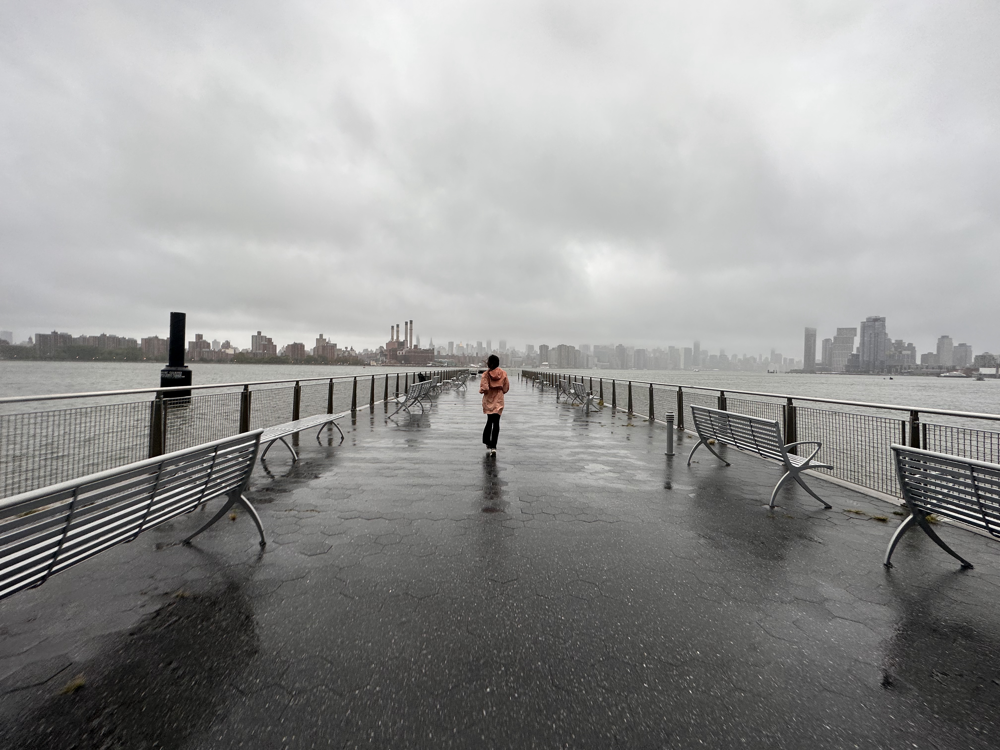

The Williamsburg waterfront is a landscape overlooking the East Hudson onto the the Manhattan Skyline. It has a spectacular view across the waterfront park, walkway, ferry terminal down till the Williamsburg Bridge.